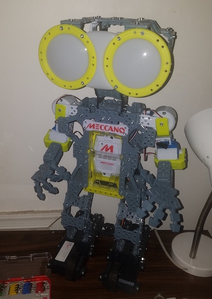
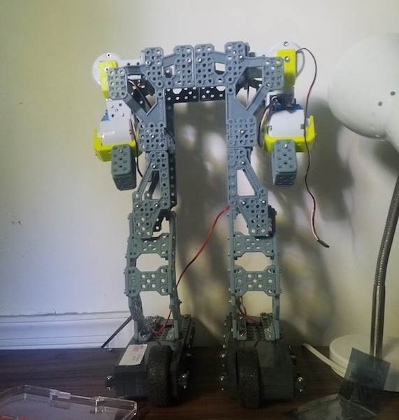
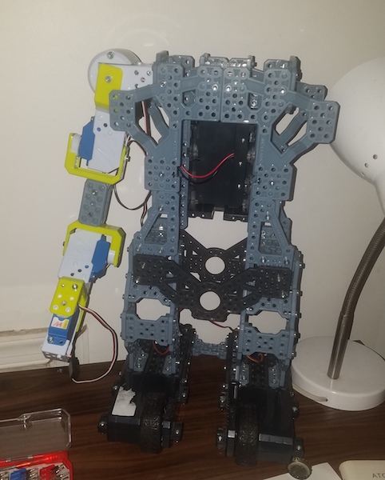

The Meccanoid Saga Begins!
While doing laundry last week I decided to check out the nearby thrift store. The usual stuff was there. Clothes. Dishes. Books. VHS tapes, records, and cds. My favorite stuff to look through is the random assortment of odd devices that end up here. There's always something random there. Stenographic typewriters. Computer registers. Film slide carousels. Microcassette answering machines.
On my way out I saw two identical robot toys. I thought they might be worth some money so I did a quick google search. The robot was a Meccanoid G15 and it was selling for $250. These were used but I figured I could sell them at 60% off.
To make a long story short I wasted my money. It turns out this robot is from 2015, isn't well loved, and is selling brand new for almost what I paid. The price I originally saw was out of date. The thrift store wouldn't let me return them but it's my own fault for not doing a better search. Greed is blinding.

So, what to do with these robots? For now I'm just going to try modifying the one. I removed anything that's not necessary for mobility or stability. What's left are two motors in the feet and four servos for the two arms. Each arm has only two degrees of freedom, very limited. The big circles that look like eyes are just for show. They light up but this robot is blind to its environment.
The one robot still had batteries in it. It powered up but there was damage to its computer. Some functions on it still worked though. I was really impressed with its "Learned Intelligent Movement." The robot allows you to move its joints, record the movement, then play it back. I haven't read any documentation on it but my best guess on how it records the movement is to record the electricity being generated as joints are moved. You can pass electrity through a motor to move it or move the motor to generate electricity. I also believe this is how the movements are recorded because the LEDs on the servos light up with an intensity proportional to the jerkiness of the movement, even when the servos are unpluged.
 
Taking apart the left arm and combing it with the right allows for a longer reach. The four servos on one arm may be too many. It could probably get by with the range of motion provided by three servos. I haven't tested if these servos can support this kind of weight. If the "shoulder" servo can support the weight I'll add a small servo-claw onto the end of the long arm to allow it to interact with its environment. I'm going to add a camera to let it see and a rasberry pi to act as the brain. I've never tried making something artificially intelligent, though I'm well read on the subject.
For now I'm going to focus on getting this thing to move around. After that I want to get it to recognize and approach tennis balls. I'll post about this project whether I fail or achieve these goals.